#2876 Spy Game - Der finale Countdown
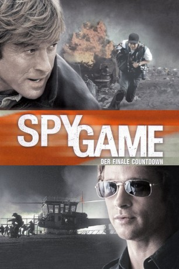 
 IMDB-Wertung: 7.1 / 10
IMDB-Wertung: 7.1 / 10  Metascore: 63
Metascore: 63 
Der EX-C.I.A. Agent Tom Bishop wird in einem chinesischen Gefängnis gefangen genommen. Er soll innerhalb von 24 Stunden exekutiert werden. Nun soll sein früherer Ausbilder und Geheimdienst Agent Nathan Muir einem Untersuchungsteam der C.I.A. mehr Informationen über Bishop preisgeben, um ihnen einen Eindruck zu verschaffen, wen sich die Chinesen da geschnappt haben. Schon nach kurzer Zeit wird die Lage immer komplizierter und verzwickter, denn nicht alle haben das gleiche Ziel. In Episoden erinnert sich Muir, wie er Bishop kennengelernt und ausgebildet hat …
Jahr: 2001
Dauer: 126 Minuten
FSK: 12
Land: Deutschland Studio: UIPTonspuren: DTS - ,
Untertitel: Deutsch, Englisch,
Auflösung: 1080p (1920x816) Größe: 8294 MB
Genre: Action, Thriller, Krimi
Regisseur:  Tony Scott
Tony Scott
Drehbuch: Michael Frost Beckner, Michael Frost Beckner, David Arata
Soundtrack: Harry Gregson-Williams
Darsteller:
- 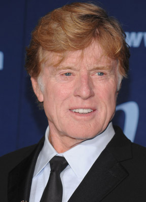 Robert Redford als Nathan D. Muir
 Brad Pitt als Tom Bishop
Brad Pitt als Tom Bishop Catherine McCormack als Elizabeth Hadley
Catherine McCormack als Elizabeth Hadley- 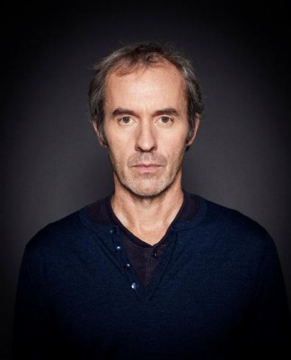 Stephen Dillane als Charles Harker
- Larry Bryggman als Troy Folger
 Marianne Jean-Baptiste als Gladys Jennip
Marianne Jean-Baptiste als Gladys Jennip- 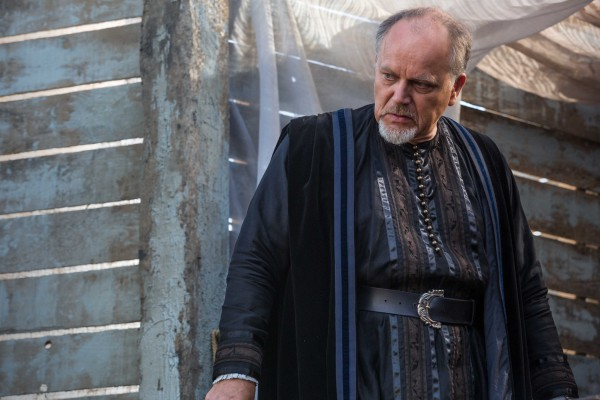 Matthew Marsh als Dr. William Byars
- 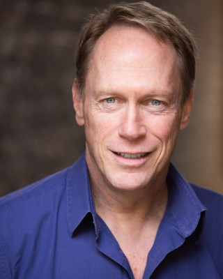 Todd Boyce als Robert Aiken
- 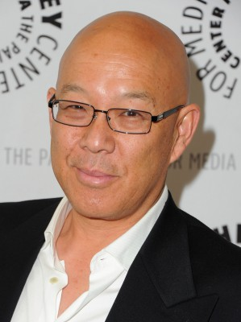 Michael Paul Chan als Vincent Vy Ngo
- 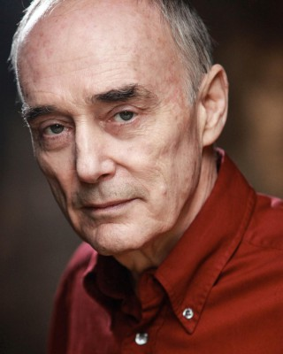 Garrick Hagon als CIA Director Cy Wilson
- 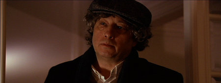 Bill Buell als Fred Kappler
- 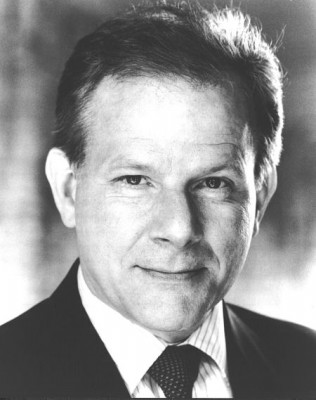 Colin Stinton als Henry Pollard
 Ted Maynard als CIA Administrator
Ted Maynard als CIA Administrator- 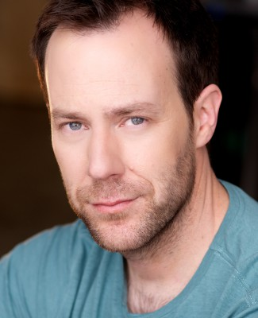 Demetri Goritsas als Billy Hyland
 Shane Rimmer als Estate Agent
Shane Rimmer als Estate Agent- David Hemmings als Harry Duncan
 Benedict Wong als Tran
Benedict Wong als Tran Ken Leung als Li
Ken Leung als Li- Ho Yi als Prison Warden
- David Cheung als Down's Prisoner
 Hon Ping Tang als Prison Guard
Hon Ping Tang als Prison Guard- Vincent Wang als Outer Gate Guard
- Freddie Joe Farnsworth als Vietnam: Radioman
- Iain Smith als Berlin: Ambassador Cathcart
- 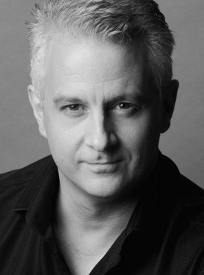 Peter Linka als Berlin: CIA Polygraph
- 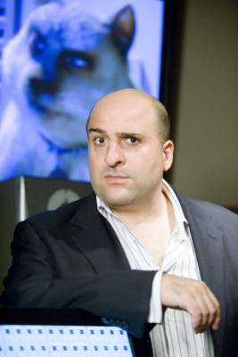 Omid Djalili als Beirut: Doumet
- 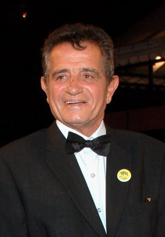 Amidou als Dr. Ahmed - Beirut
- Nabil Massad als Beirut: Sheik Salameh
 Dale Dye als Commander Wiley - Rescue Sequence
Dale Dye als Commander Wiley - Rescue Sequence- Ian Porter als Reporters: US-China Reporter
- Charlotte Rampling als Berlin: Anne Cathcart
 James Embree als Special Forces Team Member - Rescue Sequence , uncredited
James Embree als Special Forces Team Member - Rescue Sequence , uncredited- Tong Lung als Chinese Prison Guard , uncredited
- Andrea Osvárt als Muir's Cousin , uncredited
- Wil Röttgen als East German Refugee #2 - Berlin , uncredited
- Scott Samain als CIA Agent , uncredited
- Terrance Ottis Williams als Lloyds of London Office Guy , uncredited
- Andrew Grainger als Andrew Unger
- Tom Hodgkins als CIA Lobby Guard
- 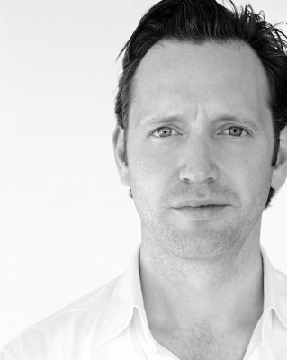 Rufus Wright als Folger's Secretary
- Quinn Collins als OPS Center Security Officer
- Sam Scudder als Back Bencher
- Yann Johnson als CIA Back Bencher
- Pat McGrath als Cleaner
- James Aubrey als Mitch Alford
- In-Sook Chappell als Alford's Receptionist
- Adrian Pang als Jiang
- Tony Xu als Interrogator
- Mark Sung als Ambulance Driver
- David Tse als Prison Doctor
Datei: X:\2001\Spy Game - Der finale Countdown (2001, FSK12, 1920x816).mkv seit 29.12.2015
Festplatte: HD 1996-2002
 Es gibt insgesamt 102 Filme in der Gruppe '2001'
Es gibt insgesamt 102 Filme in der Gruppe '2001'